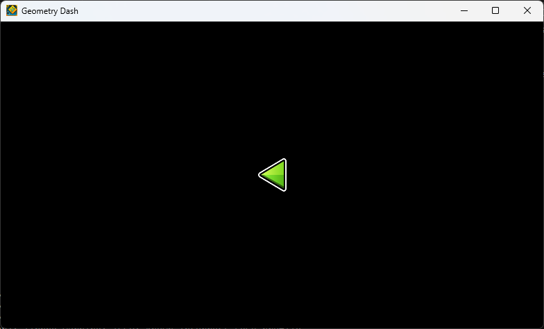

Creating a layer
- To create a layer, we can use
CCLayer,CCLayeris just a thing that allows you to make your own UI instead of modifying an existing one! here's an example of making a layer and switching that.
def MenuLayer_onMoreGames(self, this, sender):
scene = CCScene.create() # We create a new CCScene, this is where our CCLayer will be in.
layer = CCLayer.create() # Create the CCLayer, this is where all of our UI elements will be.
scene.addChild(layer) # adding the layer as a child to the scene.
CCDirector.get().replaceScene(scene) # Replace the current scene with the one we just created
- This code will turn the screen black cause the layer has nothing.
- Now you can do something like this:
layer = CCLayer.create()
layer.addChild(CCNode.create()) # or any child you want to add to layer.
scene.addChild(layer)
- But here's what i recommend:
- Creating a class name, in the
__init__function, create a CCLayer inself, like this:self.layer = CCLayer.create() - Normally in C++ we create a class that derives from CCLayer and override CCLayer's init function, but we can't create classes during runtime.
- make a function named
init, in it, callCCLayer'sinitfunction, then add all the UI elements you want to the layer you created, then return True. - make a
@staticmethodfunction namedcreate(), make an instance of your class, then add a check for if yourinitfunction returns true or false, if it returns true, return the layer you created in the__init__function, else returnNone. - Here's an example because my explanation definitely sucks.
class MyLayer:
def __init__(self):
self.layer = CCLayer.create()
def init(self): # do not confuse `init` and `__init__` please
if not self.layer.init(): return False
sprite = CCSprite.createWithSpriteFrameName("GJ_arrow_01_001.png")
sprite.setPosition(CCPoint(CCDirector.get().getWinSize().width / 2, CCDirector.get().getWinSize().height / 2))
self.layer.addChild(sprite)
return True
@staticmethod
def create():
myLayer = MyLayer()
if myLayer.init():
return myLayer.layer
else:
return None
- To use this layer, we can just call
myLayer.create()as it returns the layer you added all your modifications to!
scene.addChild(MyLayer.create())
CCDirector.get().replaceScene(scene)
- This is what you should see when entering the layer! 
- Now you can go to your layer and add whatever you want!